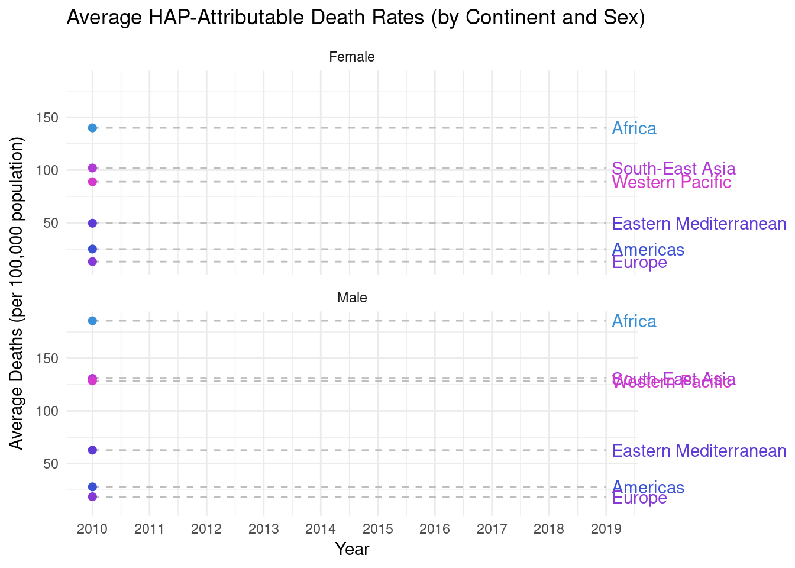
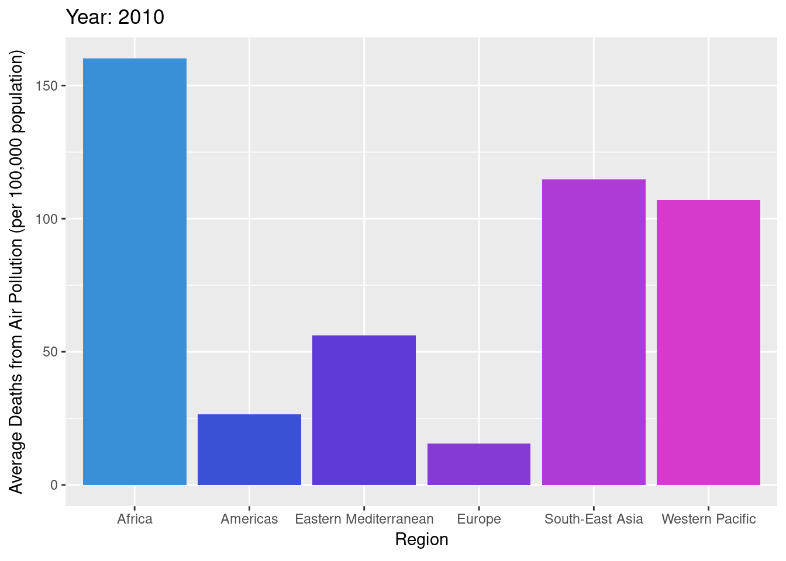
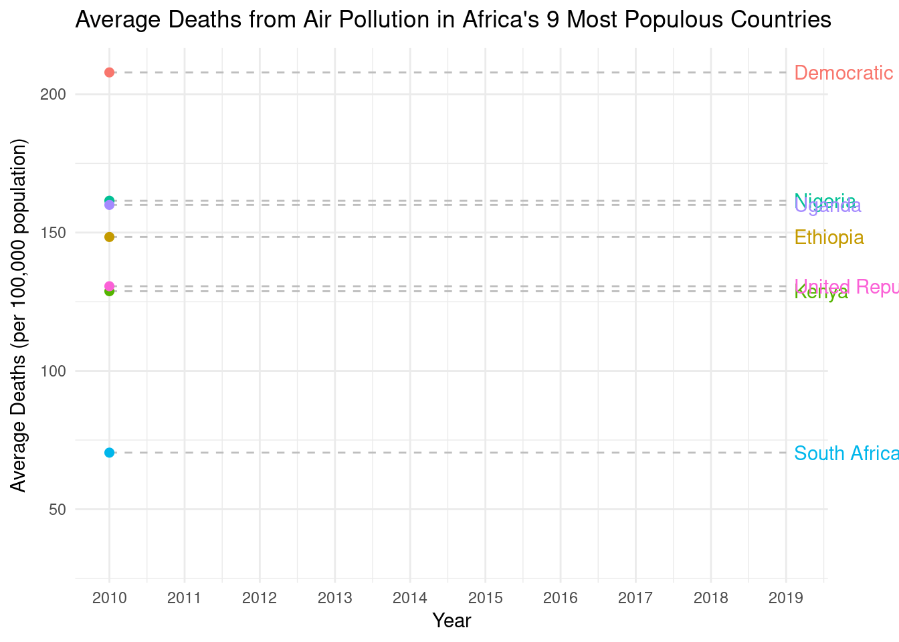
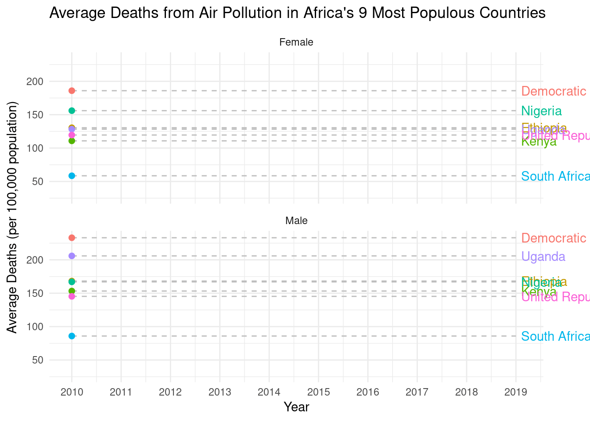

Final Project
Introduction
Our animated data visualizations are a tool for exploring how much household air pollution (HAP) differs within and between regions and how those discrepancies have evolved over the 2010s. HAP is often emitted from cooking with solid fuels such as wood or coal, smoking, cleaning products, and mold inside homes. Specifically, our animations seek to inform the question: How did the dispersion of death rates attributed to HAP (for each sex) among and within different regions change over the 2010s, and what does that indicate about the equality of regions in terms of how this global burden is shared? The animations are organized by six geographical divisions created by the World Health Organization (WHO) for research purposes: the African Region, the Region of the Americas, the Eastern Mediterranean Region, the European Region, the South-East Asia Region, and the Western Pacific Region. By illustrating changes in the spread of age-standardized (adjusted for differences in age distribution among countries) death rates attributed to HAP-induced causes between regions over this decade, we can more clearly identify whether regions are converging towards similar levels of risk. Thus, our central goal is to determine if regions are more equally sharing the global burden of HAP, or if disparities are increasing across different parts of the world.
Data Source and Collection
For this project, we used a dataset from the World Health Organization’s Global Health Observatory. We sourced it from their indicator entitled “Household Air pollution attributable death rate (per 100,000 population, age-standardized).” This data estimates national mortality rates attributed to HAP-induced causes (per a standardized measure of 100,000 people) annually over the period 2010-2019. These HAP-induced causes are Acute lower respiratory conditions (1), Trachea, bronchus, lung cancers (2), Ischaemic heart disease (3), Stroke (4), and Chronic Obstructive pulmonary disease (5).
This data was collected by the WHO through comparative risk assessment methods that estimate the number of deaths or disability-adjusted life years (DALYs) in each country that can be attributed to air pollution exposure (focusing on fine particulate matter, or PM2.5). The WHO first compiled epidemiological evidence that displayed an association between the exposure to air pollution and several diseases, including lower respiratory infections, strokes, ischaemic heart diseases, chronic obstructive pulmonary diseases, and lung cancers. They used these conclusions and an alternative baseline level of air pollution exposure which poses a minimum health risk (while holding other conditions constant) to determine the increased risk of these diseases being induced by air pollution exposure. Next, they combined this with information on how widespread HAP exposure is in a given population to calculate the population attributable fraction (PAF), which represents the proportion of disease burden that can be attributed to air pollution exposure. When applied to the total disease burden in the population, this fraction revealed the total number of deaths or DALYs linked to HAP. Lastly, the WHO converted these raw numbers into age-standardized rates per 100,000 population to adjust for the differences in age distribution and total population size across regions. The resulting data allow us to quantify the burden of disease caused by HAP exposure. However, the WHO acknowledges several limitations to the accuracy of these estimates. They include the current quality of epidemiological evidence, the availability of country-level background disease burden data, the quality of global ambient air pollution exposure models and ground-level pollutant measurements, and the timeliness of updates to WHO’s global household energy model.
Since each data point represents the age-standardized death rate attributable to HAP-induced causes for a given country in a specific year, the observational unit in this dataset is a country-year. In our analysis of the data, we used data points from the combined All Causes variable, which represents deaths attributed to each of the five HAP-induced causes per 100,000 population. We used these data points for the y-axes of all of our animations. We used the Location variable to group our data points in the bars and lines corresponding to different countries and regions of the world. We separated our line graph animations for regions using the Sex variable to explore any differences in HAP-induced death rates between males and females. Lastly, we used the Period variable to animate our visualizations (placing it on the x-axis for the line graph visualizations) so we could assess differences in the data over each year in the 2010s.
Relation to Current State of the Field
Since 400 BCE, when the ancient Greek physician and philosopher Hippocrates first detected a link between disease and air quality, air pollution has been recognized as a critical environmental threat to global health. PM2.5, or fine particulate matter, is an especially harmful pollutant because of its miniscule size. These tiny particles can penetrate the bloodstream and enter the lungs, increasing the risk of cardiovascular and respiratory diseases that can lead to death (“Type of pollutants,” 2025). According to the WHO, household air pollution disproportionately affects lower income countries, and women and children typically bear the greatest disease burden related to HAP exposure (“Household air pollution,” 2024).
This global health risk has motivated researchers to work towards quantifying the disease burden attributable to air pollution. Global burden-of-disease studies consistently identify air pollution, both ambient and household, as one of the leading risk factors for death around the world (McDuffie et al., 2021). The WHO dataset used to create this animation is focused on household air pollution, and its standardized estimates allow us to understand the distribution of the mortality burden across countries, and how it has evolved over time. The data is also separated by sex, which allows us to empirically investigate the currently held notion that women bear a greater disease burden related to HAP exposure than men do. By creating digestible visualizations for these comparisons, we can identify inequalities, evaluate global progress, and inform policy strategies for improving air quality and reducing health disparities.


